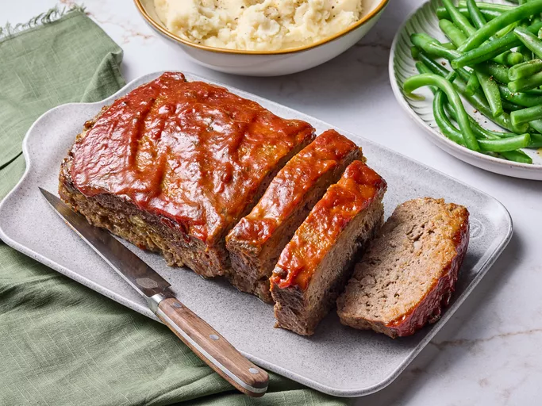

Meatloaf recipe

Melt-in-your-mouth meatloaf
This savory meatloaf is a simple yet satisfying dish made with ground meat, breadcrumbs, and seasonings, typically baked in a loaf pan and often topped with ketchup.1
Ingredients
- 1 pound ground beef
- 1 egg
- 1/2 cup breadcrumbs (plain or seasoned)
- 1/4 cup milk
- 1/4 cup ketchup (plus extra for topping)
Steps
- Preheat oven to 350°F (175°C). Lightly grease a loaf pan (around 8x4 inches).
- Combine Ingredients: In a large bowl, gently mix together the ground beef, egg, breadcrumbs, milk, ketchup, onion (if using), Worcestershire sauce (if using), salt, and pepper. Do not overmix, as this can make the meatloaf tough. Mix just until everything is combined.
- Shape the Loaf: Transfer the meat mixture to the prepared loaf pan and gently shape it into a loaf.
- Topping: Spread a thin layer of the extra ketchup over the top of the meatloaf.
- Bake: Bake for 50-60 minutes, or until the meatloaf is cooked through and the internal temperature reaches 160°F (70°C).
- Rest: Let the meatloaf rest in the pan for about 5-10 minutes before slicing and serving. This helps it hold its shape better.